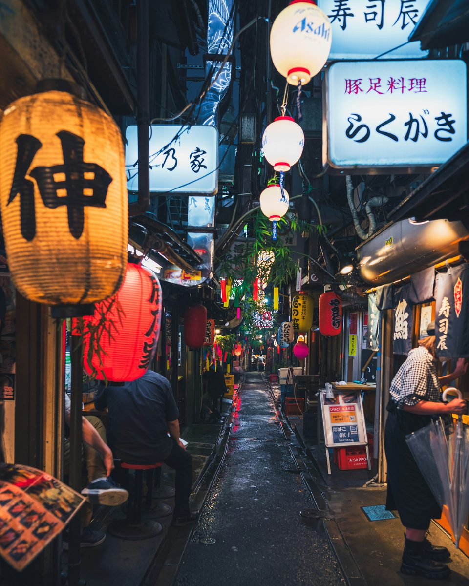

け
けんじ
@kenji_nomu
雨上がりの飲み屋街で一杯
提灯の明かりが濡れた路地に映って、雰囲気が最高でした。 小さなお店が並ぶ横丁を、はしごしながらのんびり散策。 次は焼き鳥のおいしいお店を開拓したい。

提灯の明かりが濡れた路地に映って、雰囲気が最高でした。 小さなお店が並ぶ横丁を、はしごしながらのんびり散策。 次は焼き鳥のおいしいお店を開拓したい。

このページは「あとでクリップ」の紹介用に作成したサンプル投稿です。人物・内容は架空のものです。